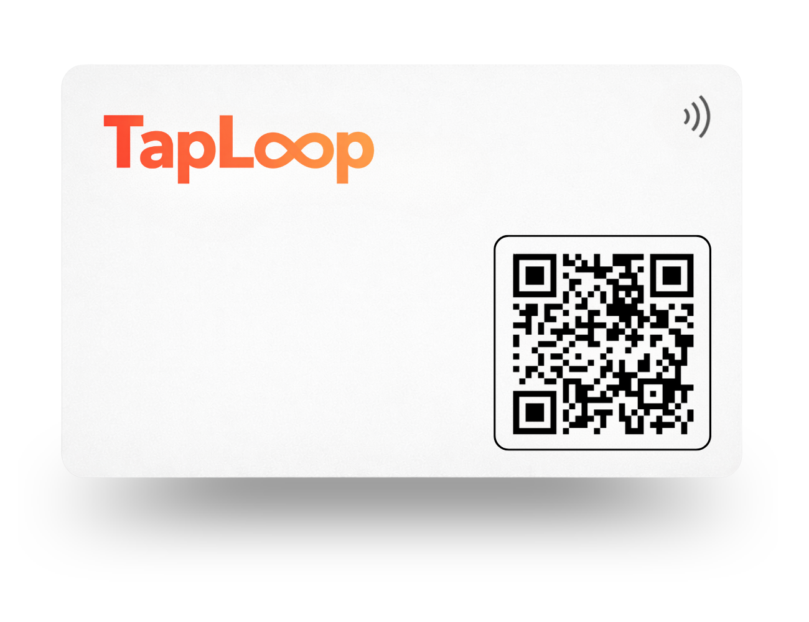
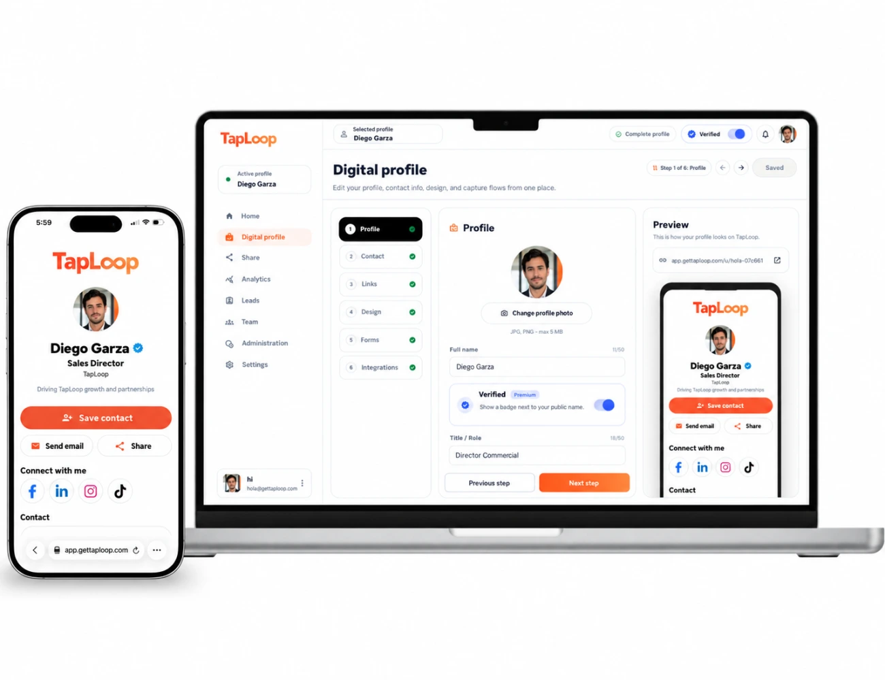

Get your proposal
A proposal with design, quantity, and your team's needs.
 Get a proposal
Get a proposal How TapLoop works
Tap your card to a smartphone and your digital profile opens instantly to share your contact info, WhatsApp, social media, and links.

Get a quote, approve, and share
We guide you from the initial proposal to delivery of your ready-to-use cards.
A proposal with design, quantity, and your team's needs.
Get a proposal We set up the card and digital profile for each team member.

We manufacture and ship everything ready to go in 3-5 business days.

Share instantly and manage profiles, analytics, and leads.

NFC + QR
One card, many ways to connect.

TapLoop digital profile
Change your info, links, and social media whenever you need to, without replacing your card.
Change your information anytime.
Keep your profile aligned with your brand.
See how it will look before you publish.

Digital profile
Share your contact info, WhatsApp, social media, links, and calendar from the same page.
Info saved straight to the phone.
Direct conversation.
Quick contact.
LinkedIn, Instagram, and more.
Drive traffic to your page.
Meetings and leads.
TapLoop platform
Measure interactions, receive contacts, and manage your information from one place.

Check visits, NFC taps, and clicks.

Collect info and follow up on opportunities.

Manage profiles and cards from one place.
Platform tutorial
See how to use the digital NFC card, check analytics, and follow up on your leads from the platform.
Watch on YouTubeLeads and conversion
Let your contacts book a meeting or leave their info directly from your profile.
Make it easy to take the next step.
Collect name, email, and phone number.
Check your leads from TapLoop.
One consistent brand identity, one profile per team member, and centralized management.
One for every team member.
Your company's logo and colors.
Manage cards and profiles.
We answer the most common questions about how TapLoop works.
No. The digital profile opens directly in the phone's browser via NFC or QR code.
Yes. Compatible phones can open the profile with NFC, and the QR code works as a universal backup.
The card also includes a QR code to open the same profile from the phone's camera.
Yes. You can update your digital profile's info and links without replacing the physical card.
Yes. Both options lead to the same TapLoop digital profile.
Yes. You can share your profile as many times as you need.

Get your TapLoop quote
Tell us what you need and we'll prepare your custom TapLoop.